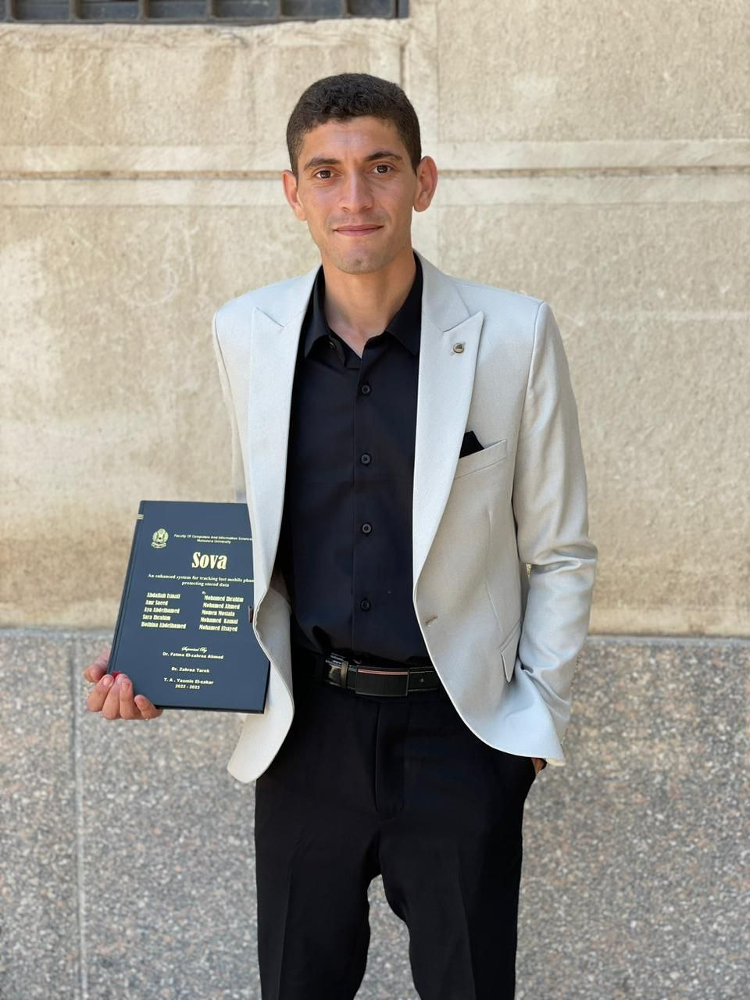

-
Amr -
24 Years - I’m a very ambitious front-end developer looking for a role in established IT company with the opportunity to work with the latest technologies on challenging and diverse projects.
- I'm quietly confident, naturally curious, and perpetually working on improving my chops one design problem at a time.
- Expert in front-end development, including technologies like html, css, javascript, pug, sass, bootstrap, react, git, console debugging with clean code quality
- I’m not a designer but have a good sense of aesthetics, and experience in responsive, mobile-first web design. I put special effort into optimizing my code and providing the best user experience.
- I would also love to give you any support after the project's completion.
Education
- Mansoura University
- Bachelor's degree, Computer and Information Sciences and Support Services
- Sep 2019 - June 2023
Work
- Checkout GitHub page